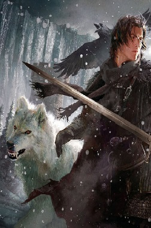
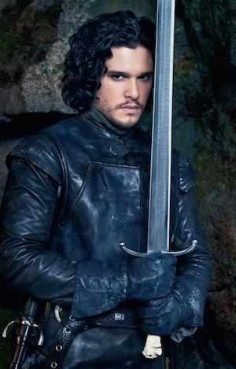
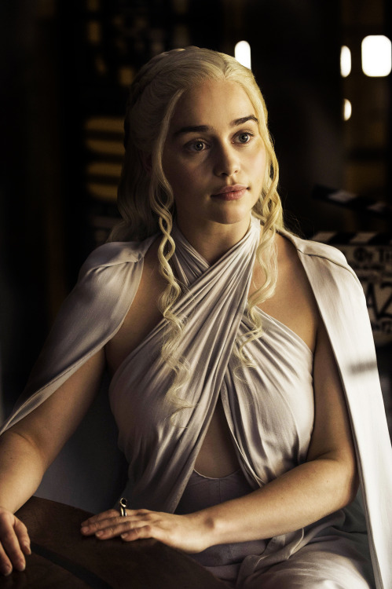
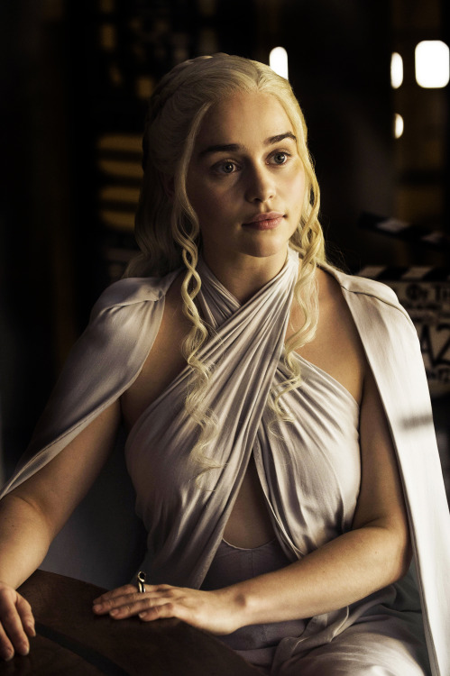
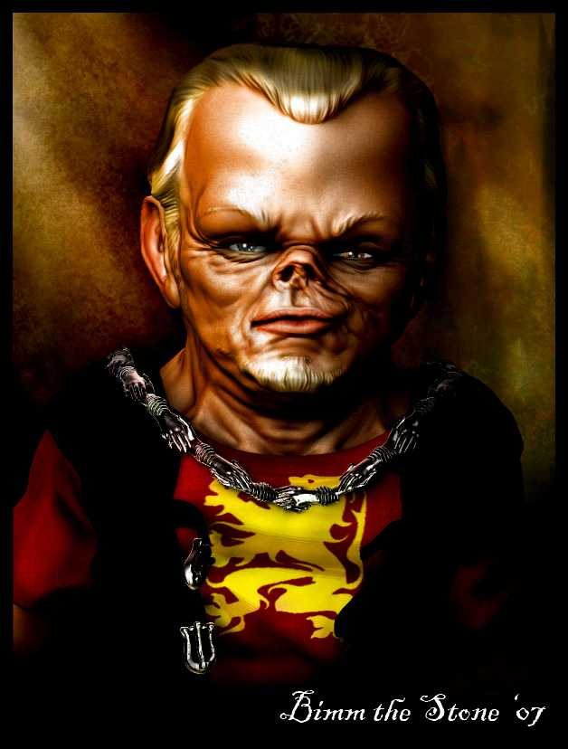
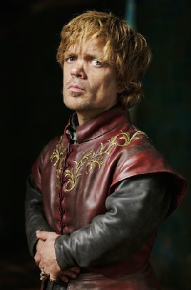

Džon Snežni


Džon Snežni(eng. Jon Snow) je kopile Lord Eddard Stark of Vinterfell. On ima pet polu-braæe i sestre: Robb, Sansa, Aria, Bran i Rickon Stark. Nesvesni identitet njegove majke, Džon je odrastao u Vinterfell. Jon kraju pridružiti je u noc´i Gledaj, gde je zaradi nadimak Lord Snov. Jon je jedan od glavnih likova POV u knjigama. U televizijskom adaptacije Game of Thrones, Džon kazuju Kit Harington.
Deneris Targerijan
 

Princeza Deneris Targarien(eng. Daenerys Targaryen), poznat kao Deneris Olujnoroðena, je jedan od poslednjih potvrdio èlanove House Targarien, zajedno sa svojim starijim bratom Viseris, a ona je jedna od glavnih POV likova Pesma leda i vatre. "Deni" se takoðe koristi kao nadimak od strane brac´e i sestara. U televizijskom adaptacije Game of Thrones, Daeneris je igra Emilia Clarke
Tirion Lanister


Tirion Lanister (eng. Tyrion Lannister) je èlan House Lannister i treæe i najmlaðe dete Gospoda Tivin Lannister i pokojni Joanna Lannister. Njegov stariji brat i sestra su Cersei Lannister, kraljica kralja Roberta Baratheon, i Ser Jaime Lannister, vitez Roberta Kingsguard.
Tirion je patuljak; zbog toga je ponekad podrugljivo naziva MVP i Halfman. On je jedan od glavnih likova POV u knjigama. U televizijskom adaptacije Game of Thrones, Tirion igra Peter Dinklage.